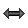
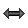
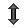
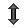

The clone object |
It is a point which can be freely moved on the figure.
The free point with integer coordinates : 
It is a point which can be freely moved on the figure but with coordinates remaining integer values.
You can restrain the position in the two axis.
It is a point that has been defined through intersection of two objects or a point image of another through a geometrical transform.
That kind of point can be moved but must remain on the object he is linked tot.
You can link a point to a line, ray, segment, segment, circle, polygon, broken line, circle arc or point locus.
A free point can be turned in linked-point through menu Modify - Link suppression - between point and object.
A linked point can be turned in a free point through menu Modify - Link creation - between point and object.
The point through two vectors sum : 
This points is image of another point through a translation vector of which is the sum of two other vectors.
The point through vector multiplication by a number : 
This points is image of another point through a translation vector of which is the multiplication of a vector and a number.
The coordinate defined point : 
It is a point defined through it's coordinates in a frame.
This kind of point is created by clicking inside a polygon.
This point can be captured with the mouse through the  tool but it will stay inside the polygon.
tool but it will stay inside the polygon.
This kind of point may be turned into a free point through menu item Modify - Link suppression - Between point and object.
A free point can be turned into a point inside a polygon through menu item Modify - Link creation - Between point and the inside of a polygon.
A line ca be defined through two points, as parallel, perpendicular, angle-bisector, perpendicular-bisector, horizontal line, vertical line, or defined through point and slope.
You can also create the image of a line trough geometrical transformations (inversion excepted).
A segment is created by clicking on two points.
You can also create the image of a segment trough geometrical transformations (inversion excepted).
A circle is created trough it's center and a point or through it's center and radius.
You can also create the image of a circle trough geometrical transformations (inversion excepted).
A circle is created trough it's origin and a point.
You can also create the image of a ray trough geometrical transformations (inversion excepted).
A vector is created through it's starting and ending points
.
A circle arc is created :
A polygon is created by clicking on each vertex. Right click when the last vertex has been specified (or click again on the first vertex).
You can also create the image of a polygon trough geometrical transformations (inversion excepted).
A broken line is created by clicking on each vertex. Right click when the last vertex has been specified.
You can also create the image of a broken line trough geometrical transformations (inversion excepted).
You can create :


A segment mark must be associated with a segment.
You simply click on the segment.
The angle mark is created in the current color and line-style.
A text display is able to contain references to calculus or variables previously defined.
It is also able to display greek or special characters.
A text display can be free ( ) or linked to a point (
) or linked to a point ( ).
).
You can choose the horizontal alignment ( left, centered,
left, centered,  ) and the vertical alignment (
) and the vertical alignment ( top, centered,
top, centered,  bottom)
bottom)
For the future characters to be in italic, enter the sequence #I.
For the future characters to be Bold, enter the sequence #G.
To return to the normal font enter the sequence #N.
You can insert LaTeX code inside a text display by surrounding the LaTeX code between two characters $.
Buttons on top of the dialog box insert the most common formulas.
To help editing LaTeX code, pressing the key TAB will move the caret position after the next character {
Allows you to display a calculated or measured value on the figure.
A value display can be free ( ) or linked to a point (
) or linked to a point ( ).
).
You can specify the number of digits.
You can also specify :
a starting string that will be displayed before the value.
an-ending string that will be displayed after the value.
You can choose the horizontal alignment (left, centered, ) and the vertical alignment (top, centered, bottom)
Allows you to display LaTeX code on the figure.
A LaTeX display can be free () our linked to a point ( ).
).
You can choose the horizontal alignment (left, centered, ) and the vertical alignment (top, centered, bottom)
The LaTeX code may contain dynamic references to the value of a variable or a calculus.
The LaTeX creation dialog box contains special icons for inserting the most popular LaTex sequences.
Buttons on top of the dialog box insert the most common formulas.
To help editing LaTeX code, pressing the key TAB will move the caret position after the next character {
Allows you to display a text editor for the formula of a calculation or a function (real or complex).
You click first at the spot the editor will be located to.
Then a dialog box pops up.
You can choose the calculation or the function associated with the editor, the size of the editor an a starting string to be displayed in front of the editor.
If the starting string is empty, the name of the calculation or the function will be displayed followed by the signe = (for example if the calculation is a fonction of the x variable, f(x) = will be displayed in front of the text editor).
If the Latex display of the formula checkbox is checked, the formula entered in the editor will be displayed in a natural form on the right size of the editor (LaTeX style).
It is drawn by linking the positions of a point through segments.
The positions can be generated :
 ) .
) .You can specify :
It is drawn by tracing the positions of a point.
The positions can be generated :
You can specify the number of points calculated.
A surface is drawn by filling a part of the figure.
 : Creation of a surface delimited by a polygon, a circle, a circle arc or a point locus (closed).
: Creation of a surface delimited by a polygon, a circle, a circle arc or a point locus (closed).
 : Creation of a surface delimited by two point locus.
: Creation of a surface delimited by two point locus.
 : Creation of a surface delimited by a point locus and two points.
: Creation of a surface delimited by a point locus and two points.
 : Creation of a surface delimited by a point locus and a line.
: Creation of a surface delimited by a point locus and a line.
The surface is drawn in the active color and filling style.
It is created by clicking on a line an on a point belonging to the half-plan.
The half-plan is drawn in the active color and filling style.
The graph of real recurrent sequence :
It is drawn in the active color and line-style.
It is the traditional web-graph of a real sequence type of u(n+1)=f (u(n)] where f is a function.
You can link the points to the x-axis or not.
The graph of complex recurrent sequence :
It is drawn in the active color and line-style.
It is the graph of a real sequence type of u(n+1)=f (u(n)] where f is a function.
Each complex term is represented by a point and linked to the next point trough a segment.
The points are drawn in the active color, active point-style and active line-style.
Allows you to display in the figure an image located in a file.
You can choose the horizontal alignment (left, centered, ) and the vertical alignment (top, centered, bottom)
The object locus is a set of traces of an object.
It can be generated through the positions of a linked point or through the values of a variable.
The number N of object traces is limited to 2000. This number can be dynamically defined.
If the object locus is defined trough a linked point :
The software simulate N positions of the linked point on the object it is linked to. For each position, a trace of the object is drawn.
If the object locus is defined trough a variable :
The software simulate N values of the variable from the mini to the maxi value. For each value, a trace of the object is drawn.
To designate a n object locus, simply clic on one of the traces.
To be noticed :
To change the color of an object locus, use the palette tool ( ).
).
An object locus doesn't own a line-style. The line style in which it is drawn is the line style of the object generating the traces.
You can create locus of locus of objects (and so on) but the total number of traces must not exceed 5000.
In a few cases, on object can be hidden by objects defined afterwards.
You can then create a duplicate of this object which function is to redraw the object.
Only one duplicate can be created for an object in a figure.
It is not really an object but a special LaTeX display which is a final object in a construction displaying the equation of a line (in a frame).
To display a line equation, use menu item Create - Display - Line equation - free or Create - Display - Line equation - linked to a point.
In the first case click at the place you want the line equation to be displayed, in the second case click on a point the line equation will be displayed to.
A dialog box pops up. Choose the frame (if your figure owns more than one frame), the number of digits for the coeffiicients, the display style and if necessary the background color, then validate.
The line equation displayed will be of type y = ax + b if the line is not parallel to the y-axis and of type x = Constant otherwise.
It is an object playing exactly the same role as an another object previously defined.
This kind of object is particularly useful for iterative and recursive constructions appeared in 4.8 version de MathGraph32.
I is possible to create a clone of the following objects : point, line, half line, segment and circle.
Created with the Personal Edition of HelpNDoc: Easy EBook and documentation generator